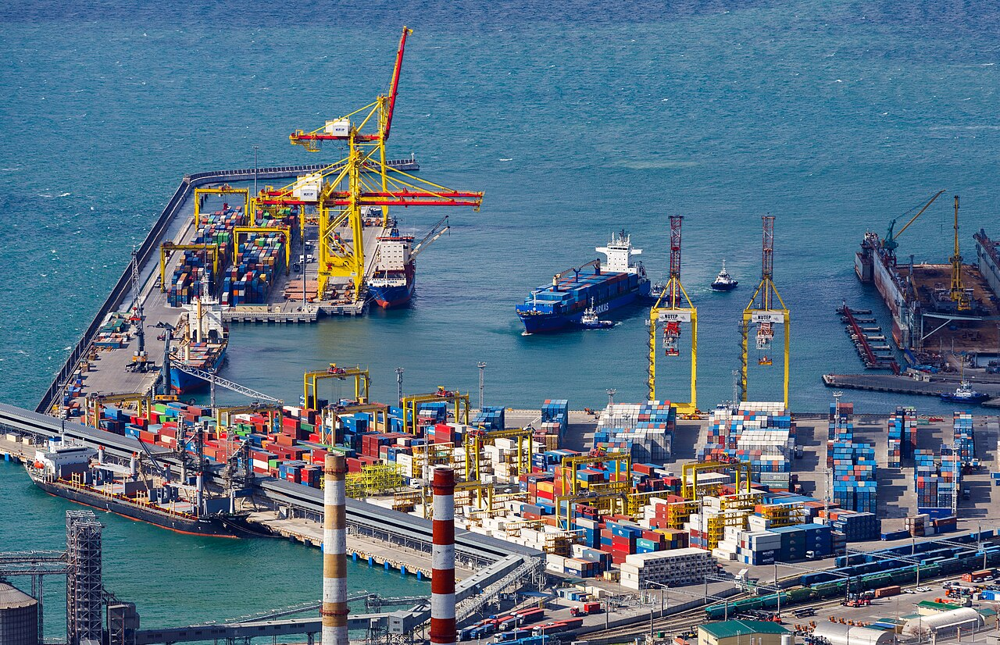
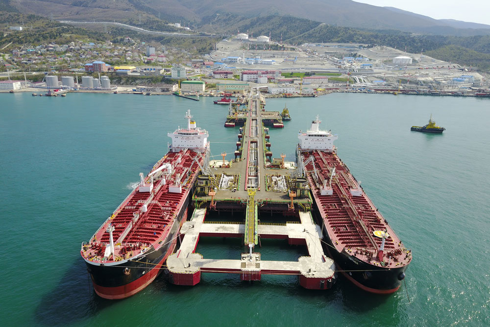
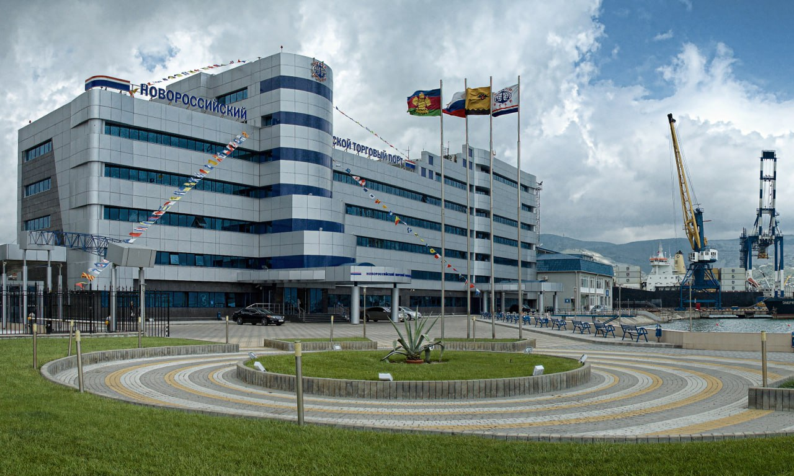

О компании НМТП
Основные факты
Полное наименование: Публичное акционерное общество «Новороссийский морской торговый порт» (ПАО «НМТП»).
Новороссийский морской торговый порт (НМТП) — крупнейшая стивидорная компания России и одна из крупнейших портовых групп в Европе.
Год создания: 1992 год (правопреемник порта, основанного в 1846 году).
Основатели: Создано на базе государственного предприятия, с 1993 года акционировано.
Штаб-квартира: Россия, Краснодарский край, г. Новороссийск, ул. Мира, д. 2.
Тикер на Московской бирже: NMTP.
Направления деятельности

Перевалка грузов — контейнеры, зерно, нефть, руда.

Нефтеналивной терминал — один из крупнейших в Европе.

Административное здание — центр управления портом.
Ключевые услуги: перевалка сухих и наливных грузов, контейнерные перевозки, экспедирование, стивидорные услуги, бункеровка судов, железнодорожные и автомобильные перевозки.
Краткая история НМТП
1846 год — основание Новороссийского порта по указу императора Николая I.
1992 год — создание ОАО «Новороссийское морское пароходство» (НМП). В 1993 году порт акционируется.
2007 год — консолидация активов, создание группы НМТП.
2011 год — выход на IPO, акции НМТП начинают торговаться на Московской бирже (тикер NMTP).
2020–2024 годы — модернизация терминалов, цифровизация процессов, рост контейнерооборота.
2025 год — запуск новых логистических мощностей, увеличение контейнерооборота на 15%, внедрение системы электронной очереди для грузовиков.
Ключевые достижения
- Крупнейший порт России по грузообороту (более 150 млн тонн в год).
- Лидер по перевалке зерна, нефти, контейнеров на Чёрном море.
- Входит в топ-20 портов Европы.
- Сотрудничество с 70 странами, обслуживание более 4000 судов ежегодно.
Социальная политика
НМТП реализует программы поддержки сотрудников: ежегодные премии, путёвки в санатории, помощь молодым специалистам. Компания участвует в благоустройстве города Новороссийска. За 2024 год более 500 семей работников порта получили материальную помощь. Действует программа «Ветеран» для бывших сотрудников.
Международное сотрудничество
НМТП поддерживает партнёрские отношения с портами Турции, Египта, Китая, Индии. Регулярно проводятся встречи с представителями международных логистических компаний. В 2025 году подписано соглашение о сотрудничестве с портом Пирей (Греция). Расширяется география экспортных поставок через Новороссийск.
Цифровизация порта
Внедрена система электронного документооборота, работает портал для клиентов, запущено мобильное приложение для отслеживания грузов. До 2026 года планируется полный переход на безбумажный документооборот и внедрение системы «умный склад».
Экологические инициативы
НМТП внедряет систему экологического мониторинга, переводит портовую технику на газомоторное топливо и участвует в программе сохранения Чёрного моря. К 2027 году планируется сокращение выбросов CO2 на 25%.
Перспективы развития
НМТП реализует программу модернизации до 2030 года. Планируется увеличение мощностей контейнерного терминала на 40%, строительство нового зернового терминала, внедрение «умного порта» на базе IoT и искусственного интеллекта.
В 2026 году начнётся реконструкция причалов № 1-8, что позволит принимать суда класса Panamax. Также в планах — электрификация портовой техники для снижения углеродного следа.